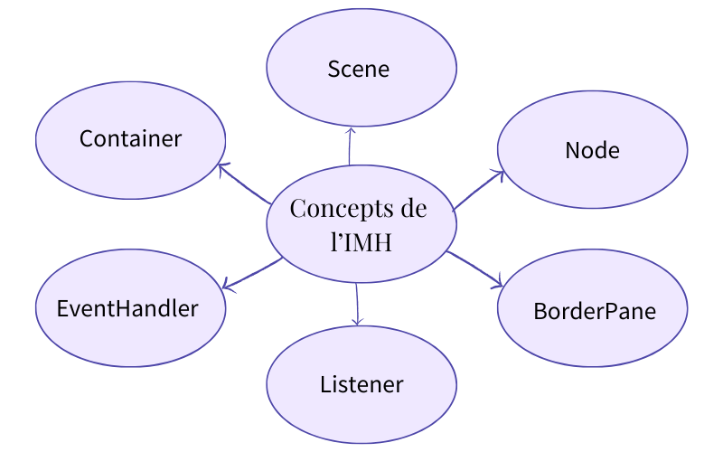

La deuxième phase consistait dans le développement de l'interface IHM, un aspect important pour l'expérience utilisateur de notre application. Scene Builder, un outil de conception utilisé pour la réalisation de nos interfaces, nous a permis de créer et d'organiser les interfaces.
Phase 2 : Création d'une interface graphique
L'implémentation des interactions utilisateur a constitué un autre défi technique. Nous avons approfondi notre maîtrise des Listeners pour la gestion des événements, exploré les mécanismes de Binding pour synchroniser efficacement les données entre l'interface et notre modèle, et manipulé les Scenes pour gérer la navigation dans l'application.

L'utilisation de FXML nous a permis de séparer clairement la logique de présentation du code métier, facilitant ainsi la maintenance et l'évolution de notre application.
A propos du projet
Versionning : GitLab
Equipe : 2 personnes
Outils de développement : JavaFx, SceneBuilder
Durée du projet : du 27 mai au 16 juin 2025, 20 jours
Communication : GoogleDocs, CodeWithMe de IntelliJ